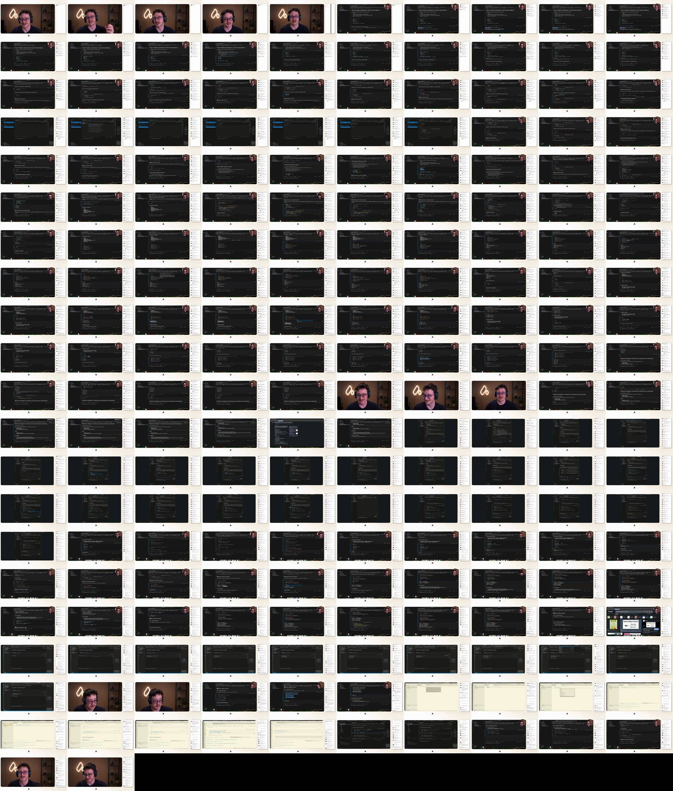

10:11

1:52:32
Introducción y expectativas de la sesión
Fundamentos de programación: variables y tipos de datos
Uso de f-strings y manejo de errores comunes
Interacción con el usuario: entrada de datos y casting
Función de Input y su Comportamiento
Divisiones y Módulos en Operaciones
Errores Comunes en Operaciones Aritméticas
Evaluación de Operadores Lógicos
Ejercicio Práctico de Aplicación
Configuración de inputs y condiciones de descuento
Implementación de lógica de descuento
Verificación de condiciones y resultados
Discusión sobre nomenclatura y buenas prácticas
Introducción al índice de masa corporal
Desarrollo colaborativo de la calculadora de IMC
Interpretación de resultados del IMC
Ejercicio práctico: Análisis de nombres
Contando caracteres en cadenas
Resumen de la sesión y próximos pasos